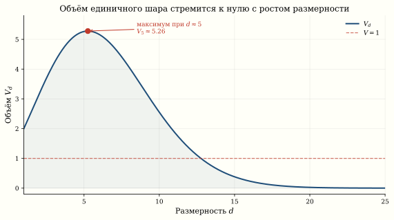
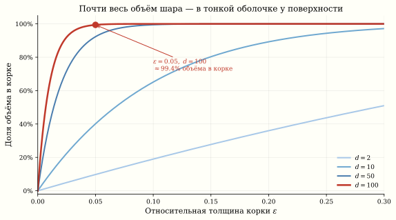
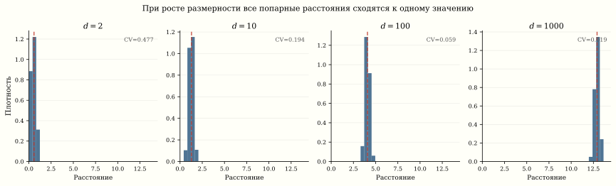

Ландшафт функции потерь и парадоксы высокой размерности
Нейронная сеть с миллионами параметров минимизирует функцию потерь в пространстве, которое невозможно визуализировать. Что увидит человек, если «срежет» этот ландшафт плоскостью? Почему в пространстве тысяч измерений почти все точки — седловые, а не локальные минимумы? И есть ли смысл вообще «застрять» в плохом локальном минимуме?
Зачем проецировать ландшафт
Когда мы обучаем нейросеть, мы движемся по поверхности L(\theta), где \theta \in \mathbb{R}^d, а d может быть от десятков тысяч (LeNet) до сотен миллиардов (GPT-4). Визуализировать такое пространство напрямую нельзя — мы ограничены двумя или тремя измерениями на экране.
Идея Li et al.1 проста: возьмём обученные веса \theta^*, выберем случайные направления \delta_1, \delta_2 \in \mathbb{R}^d и посмотрим на значение функции потерь вдоль них:
1 Li, Xu, Taylor, Studer, Goldstein. Visualizing the Loss Landscape of Neural Nets, NeurIPS 2018.
f(\alpha, \beta) = L(\theta^* + \alpha\,\delta_1 + \beta\,\delta_2).
Результат — двумерная «карта высот», которую можно нарисовать.
Проекция на прямую
Простейший случай — одно направление:
f(\alpha) = L(\theta^* + \alpha\,\delta), \quad \alpha \in [-1, 1].
Если \delta — случайный гауссов вектор, мы получаем одномерный «срез» ландшафта. Для хорошо обученной сети этот срез выглядит как гладкая парабола вблизи минимума, но вдали от минимума — многомодально: встречаются плоские плато и острые пики.
Чтобы сравнивать архитектуры честно, Li et al. предложили нормализовать направления \delta поканально: каждый фильтр в свёрточном слое масштабируется до нормы соответствующего фильтра в \theta^*. Без этого трюка масштаб весов искажает картину, и все ландшафты выглядят одинаково.
Проекция на плоскость
Два случайных направления \delta_1, \delta_2 задают двумерное сечение. Для ResNet-56 без skip-connections ландшафт оказывается хаотичным с множеством глубоких впадин. Добавление residual connections драматически сглаживает его — это одно из самых наглядных объяснений того, зачем нужны skip-connections.
import torch
import numpy as np
import matplotlib.pyplot as plt
from mpl_toolkits.mplot3d import Axes3D
def project_loss_surface(model, loss_fn, data, n_points=51, scale=1.0):
"""Проецируем функцию потерь на случайную плоскость."""
theta_star = {k: v.clone() for k, v in model.state_dict().items()}
# Два случайных направления (filter-normalized)
delta1, delta2 = {}, {}
for k, v in theta_star.items():
d1 = torch.randn_like(v)
d2 = torch.randn_like(v)
# Нормализация по фильтрам
if v.dim() >= 2:
for i in range(v.shape[0]):
d1[i] *= v[i].norm() / (d1[i].norm() + 1e-10)
d2[i] *= v[i].norm() / (d2[i].norm() + 1e-10)
delta1[k] = d1
delta2[k] = d2
alphas = np.linspace(-scale, scale, n_points)
betas = np.linspace(-scale, scale, n_points)
Z = np.zeros((n_points, n_points))
for i, a in enumerate(alphas):
for j, b in enumerate(betas):
# θ* + α·δ₁ + β·δ₂
new_state = {}
for k in theta_star:
new_state[k] = theta_star[k] + a * delta1[k] + b * delta2[k]
model.load_state_dict(new_state)
with torch.no_grad():
Z[j, i] = loss_fn(model, data).item()
model.load_state_dict(theta_star)
return alphas, betas, Z
# Визуализация
# alphas, betas, Z = project_loss_surface(model, loss_fn, train_data)
# fig, ax = plt.subplots(subplot_kw={"projection": "3d"})
# A, B = np.meshgrid(alphas, betas)
# ax.plot_surface(A, B, Z, cmap="coolwarm", alpha=0.9)
# ax.set_xlabel("α"); ax.set_ylabel("β"); ax.set_zlabel("Loss")Возьмите поверхность потерь в руки: тяните, чтобы крутить камеру, и кликните по ней, чтобы уронить шарик градиентного спуска — он сам скатится в ближайший минимум.
Парадоксы высокой размерности
Ландшафт функции потерь живёт в пространстве очень высокой размерности. Наша геометрическая интуиция, выработанная в 2D и 3D, систематически обманывает нас в таком мире.
Парадокс 1: объём сферы
Объём единичного шара в \mathbb{R}^d:
V_d = \frac{\pi^{d/2}}{\Gamma(d/2 + 1)}.
При d = 2 это \pi \approx 3{,}14. При d = 10 — уже 2{,}55. При d = 100 — число V_{100} \approx 2{,}37 \times 10^{-40} — это \approx 2{,}6 \times 10^{39} раз меньше объёма атома водорода (\approx 0{,}62\,\text{Å}^3 при радиусе Бора \approx 0{,}53\,\text{Å}). Единичный шар в высоких измерениях пуст.

Парадокс 2: весь объём — у поверхности
Какая доля объёма шара радиуса R лежит в тонкой корке шириной \varepsilon R у поверхности? Отношение:
\frac{V_d(R) - V_d(R - \varepsilon R)}{V_d(R)} = 1 - (1-\varepsilon)^d.
При d = 100 и \varepsilon = 0{,}05 корка содержит 1 - 0{,}95^{100} \approx 99{,}4\% всего объёма. В пространстве параметров нейросети «внутренность» шара фактически пуста — все точки прижаты к границе.

Парадокс 3: все точки далеко друг от друга
Для N точек, равномерно распределённых в единичном кубе [0,1]^d, среднее расстояние между парой точек:
\mathbb{E}[\|x_i - x_j\|] \approx \sqrt{d/6}.
А дисперсия расстояний растёт как O(1/d), то есть все попарные расстояния стремятся к одному и тому же значению. В d = 10\,000 разброс расстояний — доли процента. Метрика расстояний теряет смысл.

Это явление формализуется неравенством концентрации. Для стандартного гауссова вектора g \sim \mathcal{N}(0, I_d):
\Pr\left[\left|\|g\| - \sqrt{d}\right| > t\right] \leq 2\exp\left(-\frac{t^2}{2}\right).
Норма случайного вектора в \mathbb{R}^d сконцентрирована около \sqrt{d} с отклонением порядка O(1). Гауссов вектор в высоких измерениях лежит на тонкой сферической оболочке.
Парадокс 4: седловые точки вместо локальных минимумов
В двумерном ландшафте локальный минимум — обычное дело: обе кривизны положительны. Но в d-мерном пространстве для стационарной точки нужно, чтобы все d собственных значений гессиана были одного знака. В модели, где знаки собственных значений независимы и равновероятны (упрощение, но иллюстративное), вероятность этого — 2^{-d}.
Dauphin et al.2 показали, что в высокомерных нейросетях критические точки с высоким значением loss — почти всегда седловые, а не локальные минимумы. Настоящие локальные минимумы имеют примерно одинаковое значение loss.
2 Dauphin, Pascanu, Gulcehre, Cho, Ganguli, Bengio. Identifying and attacking the saddle point problem in high-dimensional non-convex optimization, NeurIPS 2014.
Плохих локальных минимумов в глубоких нейросетях почти нет. Критические точки с высоким loss — почти всегда сёдла, а не ямы. Все настоящие локальные минимумы сосредоточены вблизи одного и того же уровня loss. Это означает: если SGD застрял — он застрял в седле, а не в плохом минимуме. Нужно не «вылезать» — нужно соскользнуть.
Это объясняет, почему SGD работает: ему не нужно «перепрыгивать» через барьеры локальных минимумов — он просто «соскальзывает» с седловых точек вдоль направлений отрицательной кривизны.
Что показывают проекции
Когда мы проецируем L(\theta) на случайную прямую или плоскость, мы видим типичное сечение, а не специально выбранное. Теорема Джонсона–Линденштраусса гарантирует, что случайная проекция из \mathbb{R}^d в \mathbb{R}^k сохраняет попарные расстояния N точек с точностью \varepsilon при k = O(\log N / \varepsilon^2) измерениях — для N = 10\,000 и \varepsilon = 0{,}1 достаточно k \approx 1\,900 измерений (константа в оценке зависит от формулировки теоремы, k \approx 2\!-\!4\,\ln N / \varepsilon^2) — вместо исходных тысяч; при d \sim 10^6 это сжатие в сотни раз.
Но одномерный срез показывает только одно из миллиона направлений. Гладкость среза не означает гладкости ландшафта: может существовать узкое «ущелье» в ортогональном направлении.
Что видно на практике
| Архитектура | Без skip-connections | С skip-connections |
|---|---|---|
| Plain-56 / ResNet-56 | Множество острых минимумов | Один широкий бассейн |
| Plain-110 / ResNet-110 | Ещё более хаотичный | Идеально гладкий |
Skip-connections выпрямляют ландшафт, превращая его из хаотической поверхности в почти выпуклую чашу вблизи решения.
Практическое следствие: широкие минимумы обобщают лучше
Keskar et al.3 заметили, что широкие минимумы (с малой кривизной гессиана) обобщают лучше, чем острые. Маленький batch size в SGD добавляет шум, который «выталкивает» оптимизатор из острых минимумов в широкие — это одна из причин, почему SGD обобщает лучше полного градиентного спуска.
3 Keskar, Mudigere, Nocedal, Smelyanskiy, Tang. On Large-Batch Training for Deep Learning: Generalization Gap and Sharp Minima, ICLR 2017.
На проекциях это видно буквально: ландшафт для SGD с batch 256 выглядит как широкая долина, а для полного GD — как узкий каньон.
Резюме
| Размерность | Интуиция 3D | Реальность d \gg 1 |
|---|---|---|
| Критические точки | Минимумы и максимумы | Почти все — сёдла |
| Оптимизация | Застреваем в минимумах | Соскальзываем с сёдел |
| Объём шара | Большой | \to 0 экспоненциально |
| Расстояния | Разные | Все почти одинаковы |
| Случайная проекция | Теряет информацию | Сохраняет расстояния |
Закон, который стоит унести: все локальные минимумы глубокой сети примерно одинаковы по качеству — плохие критические точки почти всегда сёдла, а не ямы. Визуализация через проекции — мощный инструмент, но интерпретировать её нужно с осторожностью: гладкость одного среза не гарантирует гладкости ландшафта целиком.